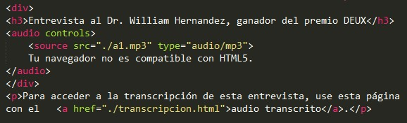

Pauta 1.2 Medios Tempodependientes
Proporcionar alternativas par a los medios tempodependientes.
La información y los componentes de la interfáz de usuario deben ser presentados a los usuarios de modo que ellos puedean percibirlos
Proporcionar alternativas par a los medios tempodependientes.
Para contenido sólo audio grabado y contenido sólo video grabado, se cumple lo siguiente, excepto cuando el audio o el video es un contenido multimedia alternativo al texto y está claramente identificado como tal:
Sólo audio grabado: Se proporciona una alternativa para los medios tempodependientes que presenta información equivalente para el contenido sólo audio grabado.
Sólo video grabado: Se proporciona una alternativa para los medios tempodependientes o se proporciona una pista sonora que presenta información equivalente al contenido del medio de sólo video grabado.
1. Se desea subir un audio de una entrevista a un docente de la carrera de medicina llamado William Hernandez, sobre el premio DEUX que ha ganado en un reciente concurso. La alternativa de texto que identifica el contenido de audio solamente lee, "Entrevista al Dr. William Hernandez, ganador del premio DEUX (transcripción de texto a continuación)" y el enlace a la transcripción se proporciona inmediatamente a continuación del contenido de sólo audio.
2. Texto transcrito: Un video es colgado sobre el discurso del presidente hacia sus mandantes, y se necesita brindar una alternativa textual con el mismo contenido que el video, por lo que se debe crear una especia de 'guión' en donde debe identificarse claramente a las personas que intervienen en cada momento, así como también de las acciones que se llevan a cabo.

Se proporcionan subtítulos para el contenido de audio grabado dentro de contenido multimedia sincronizado excepto cuando la presentacción es un contenido multimedia alternativo al texto y está claramente identificado como tal.
Un tutorial subtitulado: Un vídeo enseña cómo se hace un nudo de corbata. Los subtítulos dicen: "(música) En este tutorial les enseñare a como hacer un nudo de corbata, para ello tomamos la pala ancha en nuestro lado izquierdo...".
Se proporcionan subtítulos para el contenido de audio grabado dentro de contenido multimedia sincronizado excepto cuando la presentacción es un contenido multimedia alternativo al texto y está claramente identificado como tal.
En una presentación multimedia sobre el Chimborazo, en donde se puede apreciar desde fotos hasta videos con un guía narrando sus experiencias como tal. Se deben colocar descripciones de los eventos o acciones realizadas durante la presentación multimedia.